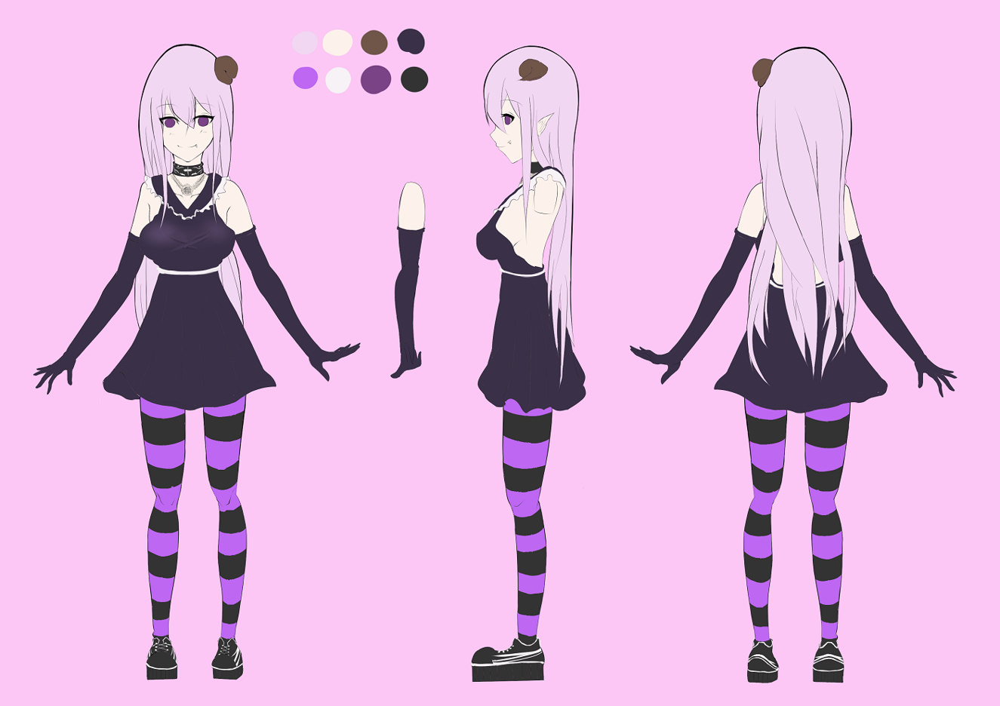

<div id="article_content" class="text-paragraph article_container"><div>補圖</div><div><br></div><div>我第一個也是唯一一個孩子</div><div>之前沒有做太多嚴謹的設定</div><div>(身材忽高忽低，胸部忽大忽小</div><div>所以就稍微畫了三視圖</div><div><br></div><div>圖如下:</div><div><br></div><div><br></div><div>應該算是一個吸血鬼的感覺，貌似會出現第二型態</div><div>這又是另一回事了(笑</div><div>從一開始到定稿修改了蠻多東西，但是仍保留不少喜愛的元素</div><div>(長直，條紋襪，手套等等...</div><div>還有頭上那是角阿! 角啊! 角!</div><div><br></div><div>性格應該是調皮又帶一些色氣(X</div><div>色調上用高對比的深色和膚色</div><div>目前沒有甚麼太多設定，也還請大家多多指教!</div><div><br></div><div><br></div><div>設定前的私服</div><div><a href="https://home.gamer.com.tw/creationDetail.php?sn=3268875" target="_blank">https://home.gamer.com.tw/creationDetail.php?sn=3268875</a></div><div><br></div><div>喜歡還請追蹤:<a href="https://www.facebook.com/Bushyeyebrowscat/" target="_blank">專頁</a></div><div>或是訂閱小屋!</div><script>
$('article.c-text img').load(function () {
// 表格內圖片大於表格寬時，設為 100%
if ($(this).parents('table').length != 0) {
if ($(this).width() >= $(this).parents('td').width()) {
$(this).width('100%');
} else {
$(this).width($(this).width() + 'px');
}
}
});
</script></div>